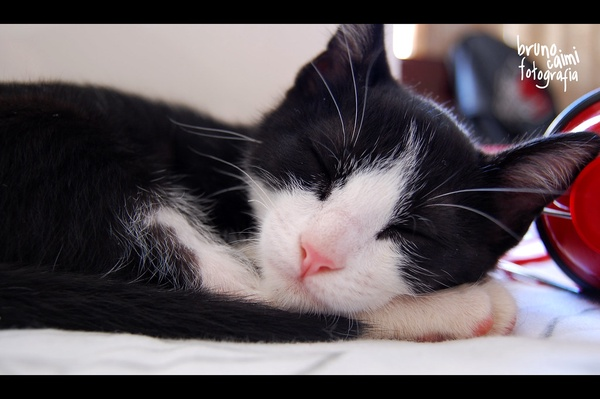
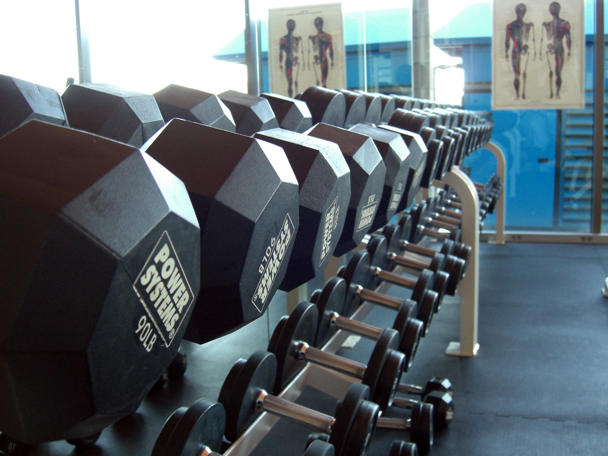

Suggestions
We can improve our concentration by taking it slower, frequently stretching and exercising, recognizing
stress triggers, and surrounding ourselves with destressing things.
Take short naps.
As a loose standard: frequent 1-10 min naps, 1-3 longer naps in the day. Sometimes even closing ones' eyes for just a couple of seconds serves a great purpose. You may need a short nap:- At a regular interval, such as every hour, or every 10 minutes when really tired.
- After a short walk.
- After eating.
- Before an event such as taking a short walk or eating
- Before adjusting from one task to another (studying one class to studying another class)

Exercise in small amounts.
- Do 3 pushups, 13 situps, and 3 lunges now and then to get rid of tension
- stretch
- take short walks

Be conscious of stress triggers.
- chaos
- certain times of day
- certain thoughts or tasks
caution: sometimes stressful thoughts are not the source of the stress, but the symptom of some other source of stress, such as light/sound sensitivity, a certain time of day... - light, sounds
- posture of body, head
- foods
Be conscious of destress triggers.
- Pets: dogs, cats, turtles, etc.
- Dark-mode on screens
- Less light. A different kind of light.
caution: If you're looking at a screen, have some background light so you're not straining to see the screen. - Dark chocolate
- Different posture of body, head
- Varying one's activities
There are lots of simple tricks that can bring some comfort, especially if used before getting tired.